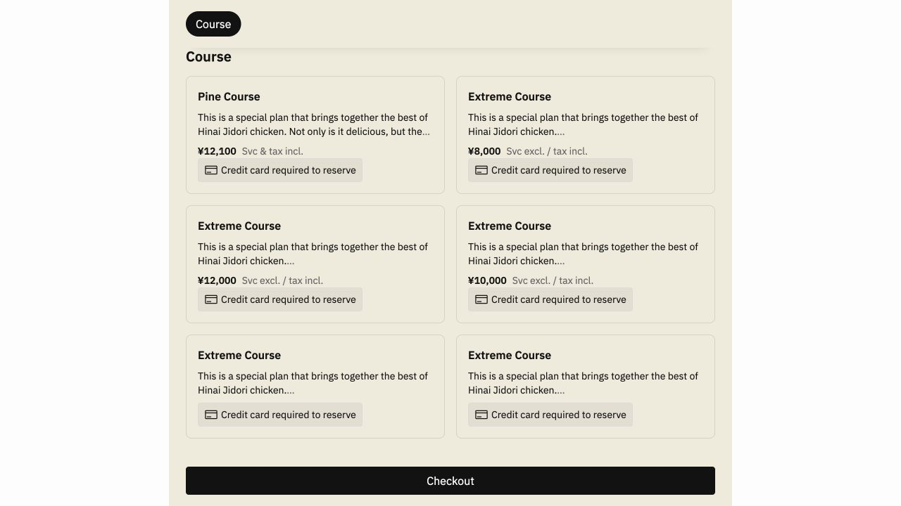

食べログ 3.50 · 轻松一些的备选 · 银座夜景銀座かしわ
银座 4 丁目 · Ginza Kashiwa
- 10/12 两人余位
- 18:00 吧台可选
- 套餐 / 每人
- 10 月新套餐 ¥8,000 / ¥10,000 / ¥12,000（含税）
- 优点
- 比内地鸡、备长炭烧烤与葡萄酒；11 楼，环境较适合约会。套餐含鸡肉串与料理，整体风格更轻松。
- 路线
- 银座 → かしわ → 东京塔，餐厅就在东银座。
服务费标注有冲突：官网菜单写已含 10%，预约页价格栏写另计。预订前需核对。
查看 10/12 两人余位截图
